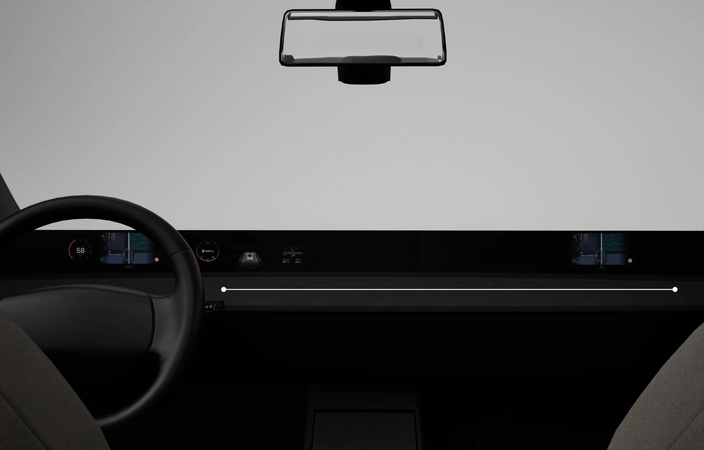

Après un workshop sur le futur de la voiture connectée, j’ai voulu me prêter à l’exercice moi aussi. Résultat : un tableau de bord panoramique, intégré à l’habitacle, qui regroupe les informations du trajet.
Le workshop
Pendant une semaine, j’ai accompagné les étudiants du Master UI/UX Design de L’École de design Nantes Atlantique, sur un atelier mené en partenariat avec Toyota France.
Les étudiants proposaient leur vision de la voiture connectée. Mon rôle : les épauler sur la gestion de projet, avec un focus sur la conception d’une interface inclusive.
Passer de l’autre côté
À la fin de l’atelier, j’ai eu envie de traiter le sujet moi-même. Deux jours d’analyse et de conception pour imaginer le poste de conduite des prochaines années.
C’est un concept perso, pas un projet Toyota.
Un tableau de bord panoramique
L’écran court sur toute la largeur de l’habitacle. Navigation, vitesse, autonomie et indications de conduite y sont réunies dans un seul ensemble visuel.
Mon sujet principal : où placer chaque information dans le champ de vision, et comment partager l’espace entre conducteur et passager. Les visuels montrent le concept dans plusieurs ambiances et à plusieurs échelles.
Le concept en images

Une vue d’ensemble
Tout le tableau de bord, du conducteur au passager.

Les informations de conduite
Les informations affichées autour du poste de conduite.

Dans l’habitacle
Le concept mis en situation dans l’habitacle.

Le véhicule dans son environnement
Une vue extérieure, pour replacer le concept dans son contexte.
Ce que j’en retiens
Accompagner des étudiants puis traiter le sujet soi-même, c’est un bon exercice : les conseils qu’on donne en workshop, il faut ensuite se les appliquer.
En voiture, la hiérarchie de l’information devient une question de sécurité. C’est le sujet que j’ai creusé en priorité. La prochaine étape serait de tester la lisibilité et l’accessibilité en situation de conduite, et de vérifier la faisabilité technique.